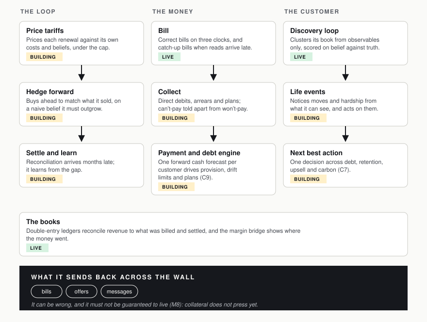

The company
The company is an automated supplier that sees only through the wall. It forms beliefs about each home, prices against them, and must live with being wrong. “Payment, credit risk and forward cash forecasting are the heart of this business.” (M7)
Read each column top to bottom, from cause to what follows. The mark in each box is read from the maturity map at publish: . done, _ in build, ~ not started.

Where to see it working
- Capabilities — each organ of the company, with its test and what it cannot yet do.
- How it’s built — how the company is built and checked.
- Explore — bills and payments for one household at a time.
- The code — the company’s modules, behind the seam.